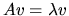
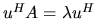
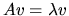
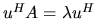

Next: Balancing
Up: Nonsymmetric Eigenproblems
Previous: Nonsymmetric Eigenproblems
Contents
Index
Eigenvalues, Eigenvectors and Schur Factorization
Let A be a square n-by-n matrix. A scalar  is called
an eigenvalue and a non-zero column vector v the corresponding
right eigenvector if
.
A nonzero column vector u
satisfying

is called the left eigenvector.
The first basic task
of the routines described in this section
is to compute, for a given matrix A, all n values of
and,
if desired, their associated right eigenvectors v and/or
left eigenvectors u.
is called
an eigenvalue and a non-zero column vector v the corresponding
right eigenvector if
.
A nonzero column vector u
satisfying

is called the left eigenvector.
The first basic task
of the routines described in this section
is to compute, for a given matrix A, all n values of
and,
if desired, their associated right eigenvectors v and/or
left eigenvectors u.
A second basic task is to compute the Schur factorization of a matrix A.
If A is complex, then its Schur factorization is A=ZTZH, where
Z is unitary and T is upper triangular. If A is real, its
Schur factorization is A=ZTZT, where Z is orthogonal.
and T is upper quasi-triangular (1-by-1 and 2-by-2 blocks on
its diagonal).
The columns of Z are called the Schur vectors of A.
The eigenvalues of A appear on the diagonal of T; complex conjugate
eigenvalues of a real A correspond to 2-by-2 blocks on the diagonal of T.
These two basic tasks can be performed in the following stages:
- 1.
- A general matrix A is reduced to upper Hessenberg form H
which is zero below the first subdiagonal. The reduction may be written
A=QHQT with Q orthogonal if A is real, or
A=QHQH with Q unitary if A is complex.
The reduction is performed by subroutine xGEHRD, which
represents
Q in a factored form, as described in section 5.4.
The routine xORGHR (or in the complex case xUNGHR) is provided to
form Q explicitly.
The routine xORMHR (or in the complex case xUNMHR) is provided to
multiply another matrix by Q without forming Q explicitly.
- 2.
- The upper Hessenberg matrix H is reduced to Schur form T,
giving the Schur factorization H=STST
(for H real) or H=STSH (for H complex). The matrix S (the Schur vectors
of H) may
optionally be computed as well. Alternatively S may be postmultiplied
into the matrix Q determined in stage 1, to give the matrix Z = Q S, the
Schur vectors of A. The eigenvalues are obtained from the
diagonal of T. All this is done by subroutine xHSEQR.
- 3.
- Given the eigenvalues, the eigenvectors may be computed in
two different ways. xHSEIN performs inverse iteration on H to compute
the eigenvectors of H;
xORMHR can then be used to multiply the eigenvectors by the matrix Q
in order to transform them to eigenvectors of A.
xTREVC computes the eigenvectors of T, and optionally transforms them
to those of H or A if the matrix S or Z is supplied.
Both xHSEIN and xTREVC allow selected left and/or right eigenvectors
to be computed.
Other subsidiary tasks may be performed before or after those just described.
Next: Balancing
Up: Nonsymmetric Eigenproblems
Previous: Nonsymmetric Eigenproblems
Contents
Index
Susan Blackford
1999-10-01